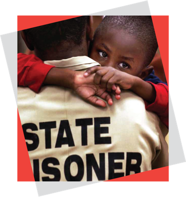
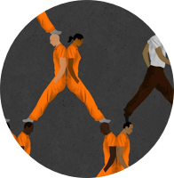
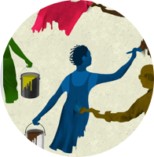

America — Home to five percent of the world’s population yet nearly 25 percent of all prisoners.
America — Home to five percent of the world’s population yet nearly 25 percent of all prisoners.
2.3 million people are incarcerated at any one time in America.
2.7 million American children have a parent in jail or prison.
America’s prison system is broken
How many kids have to grow up without parents before we reform our prison system?
Mass incarceration is costly, ineffective, and often inhumane. Most Americans agree that our current system isn’t working for our country or our children. In fact, 2.7 million children have a parent in jail or prison.
This is why the Vera Institute of Justice is dedicated to reducing the use of jail and focusing on rehabilitation.
Vera is a pioneer in identifying why mass incarceration persists in our society. Now, we need like-minded individuals to join our fight to cut the use of incarceration, transform life behind bars, and help people successfully return to their families and communities.
As a country that leads the world in locking up its own people, we need programs to shift the focus of incarceration to rehabilitation and affirm human dignity.
Restore balance to our justice system
Join us with your tax-deductible donation today
Donate NowAbout Vera
We work with local, state, and national governments to create change from within — building a society that respects the dignity of every person and safeguards justice for everyone.
Our Commitments
Securing Equal Justice

Ending Mass Incarceration
